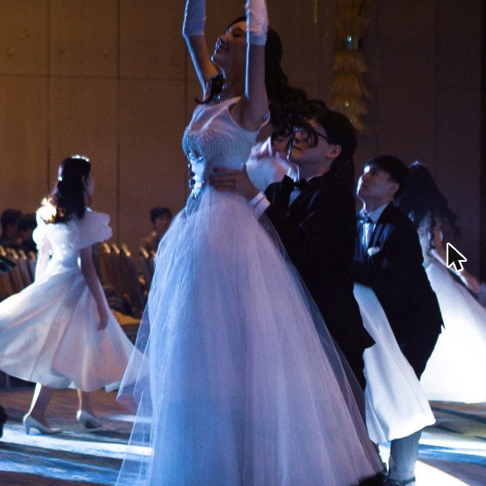
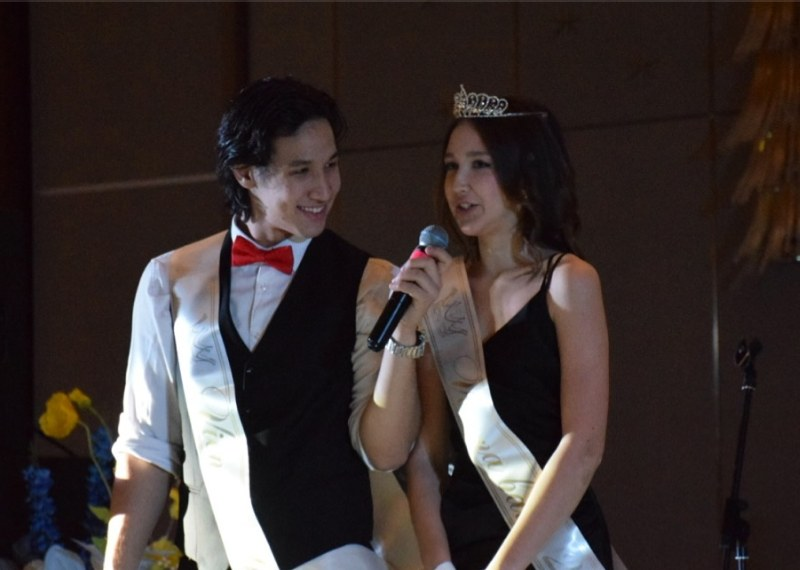

Зима 2027, Астана
Vienna Ball ’27
Благотворительный бал студсовета НИШ ЕМН Астана-Нура. Вальс, живая музыка и вечер, ради которого мы готовимся с осени.

Бал, который школьники делают сами
Венский бал проводит студенческий совет НИШ ЕМН района Нура. Мы сами пишем сценарий, ищем артистов, репетируем вальс и собираем деньги. В зале собираются около 400 человек: ученики, выпускники, родители и учителя.
Деньги от билетов и пожертвований идут на благотворительность. Сколько собрали и куда ушло, мы показываем в отчёте в течение 10 дней после бала.
Предыдущие балы прошли в Hilton Astana, Marriott и Wyndham Garden. В 2027 году планируем пятизвёздочный отель Астаны, площадку объявим позже.
Программа вечера
На балах раньше гости записывали танцы в маленькую книжечку. Наша программа такая же: порядок вечера, как мы его задумали.
- Вальс открытияПары выходят в зал, и вечер начинается.
- Гость вечераВыступает приглашённый артист.
- Школьные номераВокал, скрипка, танец. На сцене наши ученики.
- Игры и призыИнтерактивы с сертификатами от партнёров.
- ФуршетПерерыв, чтобы отдохнуть и поговорить.
- Mister & Miss ViennaГолосуют все гости, корону получает одна пара.
- ДискотекаПоследние часы вечера без сценария.
Как это было в 2025





Фото: @kkuksishka, @amgsbba. Фотобудка: @fotobudka.krg. Танцевальное выступление: @nova.dannce.
Выпускникам: поддержать бал
Вы уже прошли этот путь. Если хотите помочь тем, кто сегодня организует бал, и тем, ради кого он проходит, оставьте пожертвование.
Пожертвования выпускников идут в благотворительный сбор бала. Отчёт о собранных деньгах мы публикуем в течение 10 дней после мероприятия.
На что мы копим: шесть добрых дел
0 ₸ из 4 000 000 ₸
Сбор откроется ближе к балу.
Форма откроется в Google Forms в новой вкладке.
Партнёрам
Если ваша компания хочет поддержать бал деньгами, призами, продукцией или услугами, напишите нам в Instagram: @nisast.studentcouncil. Расскажем, что получает партнёр, и пришлём презентацию.
На сцене наших балов выступали Darkhan Juzz, Bonapart, Dudeonthe guitar, Plecto и Aikyn Tolepbergen.